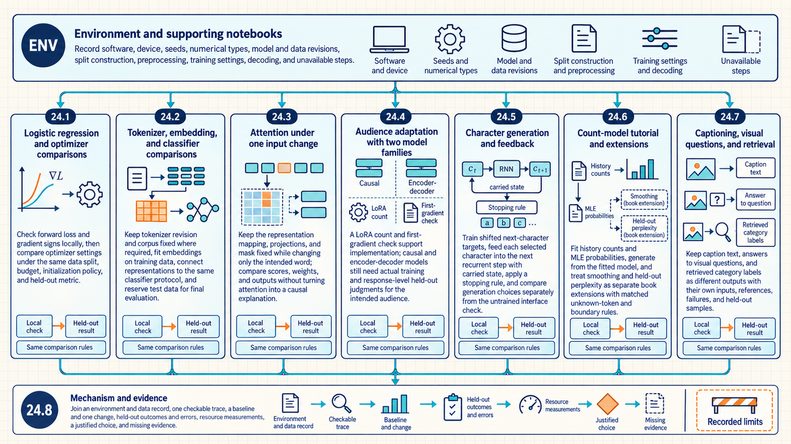

24 Computational labs: Checks, experiments, and evidence
A correct tensor shape does not establish correct gradients, useful predictions, or faster execution. Local calculations isolate those mechanics. A full experiment additionally needs its data, fitting procedure, and held-out results. Keeping those evidence types separate makes a failed comparison easier to diagnose.
A small tensor check can run without the complete dataset or training budget of a course experiment. The original notebooks supply source exercises and skeletons, including settings that the protocols below distinguish from optional choices.

Environment and source notebooks
An experiment cannot be reproduced from a model name and final score alone. Its record needs the Python and package versions, operating system, device, driver and accelerator runtime when used, seeds, and numerical types. Retain model and tokenizer revisions, data version, split construction, preprocessing, training settings, and decoding choices. A seed does not guarantee identical results across different hardware or kernels.
| Original source notebook | Reader download | Role |
|---|---|---|
[Py4DP-L3] PyTorch basics.ipynb |
PyTorch basics | Tensor creation, layout, indexing, and numerical practice |
[Py4DP-L3] Gradients & Logistic regression in PyTorch.ipynb |
Gradients and logistic regression | Manual derivatives and a training loop |
An_Introduction_to_Word_Embeddings.ipynb |
Word embeddings | Corpus fitting, vector queries, and projection inspection |
LLM_Architectures,_hometask_1.ipynb |
Logistic regression and optimizer lab | SST-2 and optimizer comparisons, §24.1 |
LLM_Architectures_hometask_2_Tel_Aviv.ipynb |
Text and recurrence assignment | AG News classification and Character LSTM labs, §§24.2 and 24.5 |
From_Finetuning_to_Attention_Inside_LLMs.ipynb |
Attention and fine-tuning | Controlled heads and audience adaptation, §§24.3–24.4 |
Ngram_Language_Model_with_NLTK_(1).ipynb |
N-gram tutorial | Counts, generation, and reload, §24.6 |
LLM_Architecture_HW4.ipynb |
Multimodal assignment | Captioning and visual questions, §24.7 |
[Py4DP-L3] [Optional] PyTorch on GPU.ipynb |
Optional GPU notebook | Device and kernel experiments under their original environment |
The downloadable notebooks preserve the original files. Their outputs are historical source results, not results of the code in this book. Open them in an existing compatible notebook environment and inspect dependencies before execution. A package installed for one notebook does not establish compatibility with every other model path.
The local tensor checks use PyTorch 2.12 with ordinary float32 CPU defaults, except where their code selects a type or device. They need no large model downloads. Full experiments may require datasets, pretrained weights, network access, or supported accelerator hardware. When unavailable, retain the failed step and its cause as unexecuted work rather than substituting a toy result.
Each experiment record should connect inputs, intermediate values, parameter changes, metrics, and errors. A trace is this ordered account of a computation’s values and state changes. Its implementation mapping relates mathematical objects to code objects, axes, dtype, and device.
The PyTorch basics source notebook supplies tensor creation, seeds, indexing, and reshaping practice. It uses seed 8436, demonstrates Gaussian samples with mean zero and standard deviation two, uniform samples from negative two to two, and 500 Poisson draws with rate one. Its torch.Tensor(1000) allocation is uninitialized and must be filled before its values are used. These are array-generation exercises, not measured neural initialization results.
The gradient source notebook connects hand calculations to logistic fitting. The word-embedding source notebook describes fitting CBOW vectors with min_count=100, window=5, and vector_size=100 on roughly 25,000 computational-linguistics abstracts collected before mid-April 2021. Its /content/arxiv.csv corpus is not bundled, so reproducing the recorded neighbors requires that data or a declared replacement. Its inspection prompts compare nmt with smt and ner, retrieve neighbors of bert, query transformer + lstm - bert, and compare tree with tree - syntax. Record the corpus, preprocessing, vocabulary, Gensim version, settings, query, and seed with any result. The separate three-sentence check in §14.1 uses Gensim 4.4.0, Skip-gram, and supplied local text.
The optional GPU notebook also contains lower-level kernel work. Its historical timings depend on its array shapes, kernel settings, and hardware. Kernel tuning is outside the scope of this book. Any timing extension here must address asynchronous execution, repeated accumulation, and host transfers under the boundary in §23.5.
24.1 Logistic regression and controlled optimizer comparisons
A classifier experiment needs an update that matches its loss before optimizer settings can be compared. The local check isolates two feature rows. The logistic regression and optimizer lab then extends that calculation to SST-2 sentiment data and controlled training comparisons.
For one binary logit per row, the shape contract is
\[ X\in\mathbb{R}^{B\times F},\quad w\in\mathbb{R}^{F},\quad z=Xw+b\in\mathbb{R}^{B} \tag{24.1}\]
Here \(X\) has \(B\) example rows and \(F\) features, \(w\) has width \(F\), and scalar \(b\) is shared. With \(B=2,F=5\), the product gives two logits. That shape example is separate from the two-feature code below.
For labels \(y_i\in\{0,1\}\) and positive probabilities \(p_i=\sigma(z_i)\), the mean objective is
\[ L=-\frac{1}{B}\sum_{i=1}^{B}\left[y_i\log p_i+(1-y_i)\log(1-p_i)\right],\quad p_i=\sigma(z_i) \tag{24.2}\]
The divisor requires \(B>0\). Labels \((1,0)\) and probabilities \((0.8,0.25)\) give \([-\log0.8-\log0.75]/2\approx0.255413\) nats, or 0.255. The second target uses the negative-class probability. The stable library call receives logits, not thresholded decisions.
The runnable local code computes logits, loss, and gradients without applying an optimizer step.
Code example: Logistic-regression forward, loss, and backward checks
import torch
# Rows are examples; columns are features.
X = torch.tensor([[1.0, 0.0], [0.0, 1.0]])
y = torch.tensor([1.0, 0.0])
w = torch.tensor([0.2, -0.1], requires_grad=True)
b = torch.tensor(0.0, requires_grad=True)
# The affine score is the logistic-regression logit.
logits = X @ w + b
loss = torch.nn.functional.binary_cross_entropy_with_logits(logits, y)
loss.backward()
assert logits.shape == (2,)
assert w.grad.shape == w.shapeIts logits are \((0.2,-0.1)\). Their probabilities are approximately \((0.549834,0.475021)\), and the mean loss is approximately 0.621268. The manual mean weight gradient is \((p-y)/2\approx(-0.225083,0.237510)\) because \(X\) is the identity. The bias gradient sums those entries, giving approximately 0.012427.
Compare these derivatives with .grad using an appropriate floating-point tolerance. A separate plain-SGD check at rate 0.1 would give weights approximately \((0.222508,-0.123751)\) and bias \(-0.001243\). It needs an actual update and a new forward call. The existing assertions check shapes, not those values or an update.
Conclusion: The supplied example makes gradient signs and the mean divisor inspectable. It cannot establish convergence or sentiment quality. The assignment requires the following larger experiment.
- Load
SetFit/sst2and use its training and validation splits. Resolve and record the dataset revision used for this run, pass it throughload_dataset(..., revision=...), and record the installeddatasetsandscikit-learnversions. Follow the notebook’s cleaning rule: lowercase text, replace hyphens with spaces, retain ASCII letters, digits, whitespace and the punctuation. , ! ?using[^a-zA-Z0-9\s.,!?]to remove other characters, then collapse repeated whitespace. Split the cleaned text withtext.split(), so punctuation attached to a word stays in its token. For example,good!andgoodremain different tokens. Apply the same rules to both splits. Fit a sparse bag-of-words representation on training text only, retaining up to 10,000 frequent tokens. Transform validation text with the saved vocabulary. - Implement both one-output sigmoid/BCE and two-class softmax/cross-entropy formulations. Implement the model and loss using tensor primitives, and compare their values and derivatives with a stable library implementation. A threshold of 0.5 supplies binary decisions for metrics, not the training objective. Answer the source’s three stability questions: where does the naive calculation fail, why does subtracting the largest logit preserve softmax probabilities, and how does that subtraction improve the numerical calculation?
- Implement zero, small-random and supplied-tensor initialization. The source skeleton’s weight shape is
[F,1]. The local example above uses[F]and returns[B]logits. Keep the chosen weight, output and target shapes consistent. Check a supplied tensor’s type and shape before using it, then clone and detach it before registering a new parameter. Reject unsupported initialization modes. Train with mini-batch SGD. Save independent copies of weights and bias after every batch, and retain final parameters, batch history, and per-epoch training/validation loss and metrics. Record unregularized prediction loss separately from an objective that includes a regularizer, and justify the chosen metric. A one-dimensional boundary drawing is insufficient for the full vocabulary model. - Cross rates
[0.01, 0.03, 0.1, 0.3, 1.0]with batches[50, 100, 200]. Report all 15 configurations, including failures, using final train/validation loss and metric, heatmaps, and observations about stability and convergence. - Compare zero initialization with small-random initialization. Then compare L1 strengths
[0, 1e-4, 1e-3, 1e-2, 1e-1]. The recommended common settings are rate 0.1 and batch 100. Count coefficients whose absolute values exceed1e-7. Plot that count, training metric, selected weight histories, and validation outcomes. - Compare GD, Momentum, AdaGrad, and Adam on the bowl \(x^2+4y^2\) and the six-hump camel function supplied in the notebook. Retain parameter and objective trajectories, loss curves, paths, oscillation, local-minimum behavior, and effects of shared settings. Use a declared starting point away from an optimum and matched plot axes when comparing trajectories. The prose suggests
(-2,-1.5), while the plotting code uses(-1.5,1.5). Both are candidate starting points, so hold the chosen one fixed across optimizers. The written bowl specification controls this comparison. The notebook’s conflicting \(x^2+2y^2\) code describes a different function. - The proximal-L1 extension is optional. Use zero when \(|w|\le\eta\lambda\), with the nonzero branches beyond that threshold. The original middle condition is reversed. §10.6 derives the correct shrinkage and explains why ordinary subgradient steps do not guarantee exact zeros.
The original skeleton needs several corrections before this comparison can run. Its proposed clamp with \(\epsilon=10^{-15}\) does not keep float32 probabilities below one: \(1-\epsilon\) rounds to one. A loss calculation can therefore still encounter \(\log0\). Calculate binary loss from logits with a stable expression, such as \(\log(1+e^z)-yz\) evaluated through a stable log-sum operation, and compare against §8.1. The dense np.zeros and np.array feature skeleton also needs a sparse representation to meet the assignment’s storage requirement. A mostly zero dense array still allocates its zero entries.
The plotting helper passes a [400,400,2] grid to functions that read coordinates along the first axis. Pass the two coordinate grids in that expected arrangement or change the indexing consistently. The camel surface can fall below \(-1\), where log1p is undefined, so use raw contours or a display transformation defined over the plotted range. Pair each stored loss with the parameters that produced it. If parameters are saved after an update, recompute their loss or separately label the pre-update value. The random-row inspection should sample from indices \(0\) through \(n-1\), using an excluded upper bound of \(n\).
Use validation evidence to compare settings. Keep any final test separate from those decisions. The same gradient and evidence checks can now support a comparison of text representations.
24.2 Tokenizer, embedding, and classifier comparisons
A better nearest-neighbor display need not improve news classification. The AG News classification lab compares representations through a classifier while retaining the official test set for final evaluation. For this lab, use fancyzhx/ag_news and pass the revision in the dataset reference to load_dataset. This snapshot has 120,000 training records and 7,600 test records. Each record has a text string and a label: 0 for World, 1 for Sports, 2 for Business, or 3 for Sci/Tech.1
The runnable local check starts with two equal-length, already supplied token-vector sequences. It averages each sequence, then applies a random MLP to four class logits.
Code example: Pooled token vectors and four-class MLP logits
import torch
import torch.nn as nn
# A real run obtains these token vectors from the trained Word2Vec model.
token_vectors = torch.tensor([
[[1.0, 0.0, 0.5], [0.5, 1.0, 0.0]],
[[0.0, 1.0, 0.5], [1.0, 0.5, 0.0]],
])
article_vectors = token_vectors.mean(dim=1)
classifier = nn.Sequential(nn.Linear(3, 8), nn.ReLU(), nn.Linear(8, 4))
labels = torch.tensor([0, 2])
logits = classifier(article_vectors)
loss = nn.CrossEntropyLoss()(logits, labels)
assert article_vectors.shape == (2, 3)
assert logits.shape == (2, 4)
print(loss.item())The document vectors are [[0.75,0.5,0.25],[0.5,0.75,0.25]], with shape [2,3]. The logits have shape [2,4], and loss is scalar. Random head weights make its value variable. There is no padding here. Unequal sequences need masked pooling or another justified aggregation policy.
Conclusion: The check joins a supplied representation to an MLP loss. It neither learns embeddings nor evaluates a news classifier. The full comparison preserves these requirements:
- Keep AG News’s official test split untouched. Form any validation subset from training data. Fit preprocessing, tokenizers, and word vectors using training text only.
- Train both BPE and WordPiece. A vocabulary of 10,000 is an example choice. Compare both on five sentences, recording tokens and explaining differences. Compare their treatment of unfamiliar words and sequence lengths with word-level splitting, then justify the tokenizer used for the classifier.
- Train Skip-gram and CBOW on BPE-tokenized text at widths 50, 100, and 200. Show three vector/nearest-neighbor examples, compare the objectives, and justify a chosen width. Explain why tokenizer vocabulary size can differ from the learned embedding vocabulary. The skeleton uses
window=5andmin_count=2. - Construct fixed-width sentence vectors through mean, sum, max, or another justified pooling rule. State how missing vectors and empty inputs are handled. Train an MLP with one to three hidden layers. Report widths, activation, optimizer, rate, batch size, and epochs. Batch 64 is a skeleton example rather than the only permitted value. Explain why an MLP can use the pooled vector and which word-order information the pooling discards. Compare that limitation with the recurrent representation in Chapter 15.
- Select settings using development data, then report official-test accuracy and a confusion matrix with labeled axes. Analyze three errors with text, reference label, and prediction. Propose an attribution method suited to the classifier. Its implementation is not required by the assignment.
A batch loss is commonly already a mean. To report an epoch mean, multiply each batch mean by its included example count, sum those products, and divide by the total count. Averaging batch means equally gives a shorter final batch too much weight. Training-batch losses also come from changing parameter versions. To measure one checkpoint’s performance, evaluate that fixed checkpoint over the relevant split with gradients disabled and evaluation mode enabled.
An attribution assigns parts of an input a measured contribution under a specified comparison. One possible method keeps the classifier fixed, records its probability for a selected class, then removes one token and recomputes the representation and the same class probability. A drop from 0.80 to 0.55 gives a contribution of 0.25 under that removal. Repeat separately for each position. Removing a token also changes a mean-pooling denominator, so the comparison measures the whole removal operation. Interactions mean these contributions need not add to the original score, and they do not establish a real-world causal effect.
The tokenizers library supplies complete vocabulary trainers for the algorithm comparison. The following offline example uses version 0.22.2, a three-sentence corpus, Whitespace pre-tokenization, and a BPE vocabulary limit of 50. It adds a WordPiece trainer on the same text. These small settings demonstrate the API before the full AG News experiment.
Code example: Training BPE and WordPiece on the same small corpus
import json
from tokenizers import Tokenizer
from tokenizers.models import BPE, WordPiece
from tokenizers.trainers import BpeTrainer, WordPieceTrainer
from tokenizers.pre_tokenizers import Whitespace
corpus = ["I love natural language processing", "Tokenization is important", "BPE builds subword units"]
for name, model, trainer in [
("BPE", BPE(unk_token="[UNK]"), BpeTrainer(vocab_size=50, special_tokens=["[UNK]"], show_progress=False)),
("WordPiece", WordPiece(unk_token="[UNK]"), WordPieceTrainer(vocab_size=50, special_tokens=["[UNK]"], show_progress=False)),
]:
tokenizer = Tokenizer(model)
tokenizer.pre_tokenizer = Whitespace()
tokenizer.train_from_iterator(corpus, trainer)
print(json.dumps({"model": name, "vocab_size": tokenizer.get_vocab_size(), "unk_id": tokenizer.token_to_id("[UNK]"), "unhappiness": tokenizer.encode("unhappiness").tokens, "training_sentence": tokenizer.encode(corpus[0]).tokens}))Tokenizer combines a model with preprocessing, and train_from_iterator fits its vocabulary from the supplied strings. Each trainer reserves [UNK]. The printed records identify the fitted vocabulary size, unknown-token ID, and encoded pieces. In this run both vocabularies contain 50 entries and assign ID 0 to [UNK].
The test word unhappiness contains h, which is absent from this training corpus. BPE retains the known pieces around an unknown marker. WordPiece returns one [UNK] for the whole word under its policy. Repeated WordPiece fits on this tiny corpus produced different vocabularies, so an exact piece sequence must be tied to its fitted tokenizer. Use tokenizer.save(path) to retain the vocabulary, model rules, and preprocessing together before further comparisons.
Conclusion: Both trainers produce reusable tokenizers from the same training text, but their unknown-word handling differs. A small vocabulary trace establishes how to run the comparison, while the full experiment measures whether the representation helps classification.
Retain training histories and the representation settings beside downstream results. Source-vector arithmetic and projection plots from Chapter 14 remain diagnostic evidence, not substitutes for classification evaluation.
24.3 Attention under a controlled input change
Changing a word while redrawing every input vector would confound a claimed word-specific effect. A controlled attention comparison uses the same representation mapping and projection matrices, then changes only the intended input.
The attention and fine-tuning notebook uses the cat sat on the mat at width 16 for its sample attention calculation, then replaces cat with dog to compare the outputs. These settings illustrate the experiment. The attention calculation must still work for other inputs and widths.
Use the one-head scaled-attention calculation from §16.1. Queries \(Q\) index updated positions, keys \(K\) index readable positions, and values \(V\) supply the mixed content. Width \(d_k\) scales dot products. The additive mask \(M^{\mathrm{attn}}\) blocks disallowed pairs before softmax, and \(O\) contains outputs. With coefficients \((0.25,0.75)\) and scalar values \((2,6)\), the output is \(0.25(2)+0.75(6)=5\).
The runnable local code supplies projected arrays directly and applies a causal mask. It does not construct representations of actual words.
Code example: Scaled attention values and row-normalization checks
import torch
# Two query positions, two key positions, and scalar values.
Q = torch.tensor([[1.0, 0.0], [0.0, 1.0]])
K = torch.tensor([[1.0, 0.0], [0.0, 1.0]])
V = torch.tensor([[2.0], [6.0]])
scale = Q.shape[-1] ** 0.5
scores = Q @ K.T / scale
causal_mask = torch.triu(torch.full_like(scores, float("-inf")), diagonal=1)
masked_scores = scores + causal_mask
weights = torch.softmax(masked_scores, dim=-1)
output = weights @ V
assert scores.shape == (2, 2)
assert output.shape == (2, 1)
assert weights[0, 1].item() == 0.0
assert torch.allclose(weights.sum(dim=-1), torch.ones(2))The unmasked score matrix is diagonal with entries \(1/\sqrt2\approx0.707107\). Its masked first row has only the first key available, giving weights \((1,0)\) and output 2. The second row gives weights approximately \((0.330238,0.669762)\) and output 4.679046. These values complement the code’s shape, masked-zero, and row-sum checks.
Conclusion: The first query excludes the future value, while the second mixes both. Row normalization applies only when at least one allowed finite score exists. A fully blocked row needs rejection, skipping, or a declared handling policy before normalization.
For the complete notebook task:
- Construct and retain token representations and query, key, and value projection matrices. Implement scaled attention and return both outputs and weights. Unpack the stub’s tuple before using either object.
- Save unmasked scores, masks, masked scores, normalized weights, and output vectors. Plot aligned heatmaps with query rows and key columns labeled by token position. Compare selected values with a manual or trusted-library calculation.
- Replace one content word under the same representation mapping. Keep all other representations and projections fixed. Compare its projected vectors, affected score row and column, and downstream output vectors. Explain what changed numerically before proposing a linguistic interpretation.
- Use at least two independently projected heads and compare their heatmaps. Repeating one head’s projection under two labels does not meet this requirement. Keep the controlled input change identical across the head comparison.
- Answer the three explanatory questions through the recorded arrays. Did changing one word affect the weights, and why? Do different heads focus on different tokens? Why might multiple heads help transformers? Interpret similarities or differences without claiming that a heatmap alone proves a causal explanation of model behavior.
This task isolates representation changes. Adapter training additionally needs evidence of which parameters changed and whether held-out answers improved.
24.4 Audience adaptation with two model families
An adapter parameter count does not establish that an answer suits its intended audience. The fine-tuning notebook requires response-level comparisons for both a causal model and an encoder-decoder model. Their target layouts and adapter targets differ.
The local runnable check counts the factor parameters and tests the first gradient. A separate assertion reconstructs an affine-quantized value. It does not load or train a model.
Code example: LoRA parameter count, usable initialization, and affine dequantization checks
import torch
# A frozen 4 by 4 weight receives a rank-1 update.
d_in, d_out, rank = 4, 4, 1
A = torch.tensor([[1.0, -1.0, 2.0, 0.5]], requires_grad=True)
B = torch.zeros(d_out, rank, requires_grad=True)
trainable = A.numel() + B.numel()
assert trainable == rank * (d_in + d_out)
# A nonzero first factor and zero second factor preserve the base output.
x = torch.tensor([1.0, 2.0, 3.0, 4.0])
delta = B @ (A @ x)
assert torch.allclose(delta, torch.zeros(d_out))
delta.sum().backward()
assert torch.count_nonzero(B.grad) > 0
assert torch.count_nonzero(A.grad) == 0
# Affine quantization reconstructs a value from an integer code.
scale, q, zero_point = 0.1, 13, 3
x_hat = scale * (q - zero_point)
assert x_hat == 1.0The four-by-four, width-one factors contain \(1(4)+4(1)=8\) trainable values. The chosen nonzero \(A\) and zero \(B\) make the initial adapter output zero. For the supplied input, \(Ax=7\), so a summed-output gradient reaches \(B\) while the gradient of \(A\) is initially zero. After \(B\) changes, a later update can also reach \(A\). §20.4 explains this initialization rule in the full layer.
The separate reconstruction gives \(0.1(13-3)=1.0\). This is affine integer quantization, not an NF4 codebook calculation. Neither assertion measures memory allocated by a quantized model or a completed update.
Conclusion: The snippet establishes eight trainable factor values and a viable first gradient. It also checks one reconstruction rule. The adaptation experiment needs these additional steps:
- Select a Dolly 15K subset. Loading its first 5,000 rows is the source’s concrete example, not a mandatory subset size. Preserve the dataset revision and selection rule. One optional source filter keeps
open_qarecords whose lowercased question containswhy,how,what isorexplain. Check the selected row count before generation, including an empty result. Display the prepared training and test records as DataFrames so their fields and separation can be inspected. - Prepare child, student, and expert answers for each chosen question. Check the source answer and rewrite suitability for the audience. Use a separate manually reviewed test set of 20 examples total, spanning the three levels. These are not 20 examples per level.
- JSONL is recommended. Check generation, JSON validity, all three answer fields, reload, and formatting on a small batch before preparing the complete training data. Keep reviewed test questions out of fitting and development choices.
- Fine-tune both
HuggingFaceTB/SmolLM2-360M-Instructandgoogle/flan-t5-smallwith four-bit loading and LoRA. For the causal model, one text sequence contains### Question:, the question,### Expertise level:, the requested level, and### Answer:followed by its answer. Use the chosen response-target mask. For the encoder-decoder, the source contains the question and expertise level. The target contains the answer. The level is therefore an input in both arrangements, allowing the same question to request different answers. Padding and target alignment must follow each model interface. - Check hardware support, numerical formats, architecture-specific adapter targets, and trainable parameters separately for each model. Prepare the quantized model before attaching adapters, as in §20.4. A causal
q_proj/v_projfragment is not an encoder-decoder configuration. If a required path is unsupported, report it rather than implying it ran. - Compare each base and adapted model on all 20 held-out cases under recorded generation settings. Retain a table with the question, audience level, expected answer, base output, adapted output, audience fit, clarity/relevance, faithfulness to the reference, and whether fine-tuning improved the answer. Compare format following and adaptation to the requested level. Apply the hallucination and source-faithfulness criteria from §9.4. Keep unsupported or contradictory claims separate from formatting errors and merely incomplete answers.
- Explain observed changes, training and storage costs, rank trade-offs, and differences between prompting, LoRA, and QLoRA. Base payload, adapter count, peak memory, and task quality are separate results.
A limited training run may test an environment, but must be labeled with its actual budget. It does not remove either required model or the evaluation cases from a claim of completing the assignment.
24.5 Character names, shifted targets, and generation feedback
A generated character must become the next recurrent input while the corresponding state is carried forward. The Character LSTM lab trains a dinosaur-name model and compares generation choices. It shares the downloadable source notebook with the AG News classification lab in §24.2. The small check below only calculates candidates from an untrained network.
Code example: Untrained character LSTM states and top-k candidate probabilities
import torch
import torch.nn as nn
vocab_size, hidden_width = 6, 8
inputs = torch.nn.functional.one_hot(
torch.tensor([[0, 1, 2]]),
vocab_size,
).float()
lstm = nn.LSTM(vocab_size, hidden_width, batch_first=True)
output_head = nn.Linear(hidden_width, vocab_size)
states, recurrent_state = lstm(inputs)
logits = output_head(states[:, -1])
top_values, top_ids = torch.topk(logits, k=3, dim=-1)
probabilities = torch.softmax(top_values, dim=-1)
assert states.shape == (1, 3, hidden_width)
assert top_ids.shape == (1, 3)
print(top_ids, probabilities)One-hot input has shape [1,3,6], states have shape [1,3,8], and the final output head produces six logits. topk retains three IDs and softmax normalizes their scores. The printed probabilities sum to one over those candidates. No draw, append, repeated model call, or parameter update occurs.
Conclusion: The snippet checks a recurrent interface and a filtered candidate distribution. A complete name generator additionally needs learned parameters, token feedback, stopping, and state handling.
- Obtain the dinosaur-name text and create character-to-ID and ID-to-character maps. Add
<and>boundary markers. For example,annabecomes<anna>. A width-four input<annhas following-character targetanna. - Choose the training/validation split at the name or source-group level before constructing overlapping windows. This keeps related windows in one split under §9.1’s leakage rule, with the split roles defined in §1.1. Implement a
torch.utils.data.Dataset:__len__()returns the window count, and__getitem__(idx)returns input and target ID tensors of the chosen width. ADataLoadergroups those items into batches. Concatenate names within each split separately and document windows crossing name boundaries, so related windows stay within their original split. - Return each input window with its one-character-offset targets. Implement the source function
one_hot_encode(array, vocab_size), returning a NumPy array with the input axes followed by a vocabulary axis. Convert that result to the tensor dtype and device required by the LSTM. Print the output dimensions of every layer for a batch and inspect softmax probabilities. - Retain the source skeleton: hidden width 256, two LSTM layers, dropout 0.5, Adam rate 0.001, batch 64, ten epochs, and gradient clipping at 5. Its
n_steps=10default denotes sequence length, used when reshaping targets. It must match the chosen window width. The loop visits the full training DataLoader in each epoch. Report the actual number of examples and updates. - Reset state for independent names or independent windows. Carry it only across deliberate contiguous segments of the same stream, with a declared detach policy for training. Shuffling unrelated windows while carrying state would mix their contexts.
- Generate from different prefixes. Encode the prefix, obtain its state, select a next character, append it, and feed its representation into the next call with the carried state. Stop on
>or a declared length limit. Reset before a new independent request. - Compare random sampling with top-k and temperature settings. A greedy baseline is a useful additional comparison. Choose and record k, temperature, window width, and split fraction. Retain seeds, prefixes, generated names, loss histories, and observed repetition or dependency failures.
The source’s training and generation code also calls .to(device) without assigning the returned tensors. Retain the result, for example inputs = inputs.to(device), so inputs and model actually share a device. Derive batch and sequence sizes from the current batch when reshaping targets and creating states. A smaller final batch can violate the skeleton’s fixed batch_size * n_steps assumption. Explicitly dropping that batch is another policy, but it changes which examples are processed.
For validation, switch to net.eval() and disable gradient recording, then restore training mode for the next training batch. The source validation loop otherwise leaves dropout active and builds unnecessary graphs, although its saved losses are ordinary numbers. In generation, test the stop marker and length limit after every selected character, including the first. Define the limit as the number of newly generated characters. Retain completed notebook cells, visible outputs, and the recorded settings with the submitted analysis.
The name task has the same next-token alignment as a larger language model. A count predictor instead uses an explicit fixed history, without a learned recurrent state.
24.6 The NLTK count-model tutorial and its extensions
A count table can expose how one observed history produces probabilities before a neural model is fitted. The original NLTK notebook is a tutorial, not a graded assignment. Its nltk.lm.MLE model uses the maximum-likelihood principle explained in §8.1, fitting continuation probabilities from their observed relative frequencies. It then generates tokens from that fitted model. Smoothing and held-out perplexity below are book extensions.
The runnable local check uses Python’s standard-library Counter, not nltk. It counts bigrams in two boundary-padded sentences.
Code example: Padded bigram counts and maximum-likelihood probability
from collections import Counter
sentences = [["<s>", "the", "cat", "</s>"], ["<s>", "the", "dog", "</s>"]]
bigrams = Counter(
(left, right)
for sentence in sentences
for left, right in zip(sentence, sentence[1:])
)
contexts = Counter(left for left, _ in bigrams.elements())
probability = bigrams[("the", "cat")] / contexts["the"]
assert probability == 0.5
print(bigrams, probability)The context the has two continuations, one cat and one dog, giving \(P(\mathrm{cat}\mid\mathrm{the})=1/2\). Its numerator and denominator refer to the same one-token history.
Conclusion: The ratio is defined for this observed history. An unseen continuation has zero MLE probability, and an unseen history has a zero denominator in the direct count ratio. Library fallback behavior must be checked separately.
The NLTK interface adds vocabulary handling and a stored model to this count calculation. The next example uses nltk 3.9.2 and dill 0.4.1 on the same two short sentences, now with trigram histories. The code fits its counts from these local sentences without downloading a corpus or loading pretrained weights.
pad_both_ends adds two <s> tokens and two </s> tokens for order three. These boundary markers are modeled sentence content, unlike dense-batch placeholders excluded by a loss mask. padded_everygram_pipeline supplies one iterator over sentence n-grams of lengths one through three and another over vocabulary tokens. Both consume the original sentence collection, so the example keeps that collection as a reusable list. Inspecting and exhausting an iterator requires creating a fresh one before fitting.2
Code example: NLTK trigram counts, bit-based scores, and a saved-model round trip
from io import BytesIO
import dill
from nltk.lm import MLE
from nltk.lm.preprocessing import pad_both_ends, padded_everygram_pipeline
sentences = [["the", "cat"], ["the", "dog"]]
order = 3
print([list(pad_both_ends(s, n=order)) for s in sentences])
training, vocabulary = padded_everygram_pipeline(order, sentences)
model = MLE(order)
model.fit(training, vocabulary)
history = ("<s>", "the")
count = model.counts[history]["cat"]
total = model.context_counts(history).N()
score = model.score("cat", history)
print(count, total, score)
targets = [history + ("cat",)]
print(model.logscore("cat", history),
model.entropy(targets), model.perplexity(targets))
print(model.vocab.lookup("never_seen"),
model.score("never_seen", history))
saved = BytesIO()
dill.dump(model, saved)
saved.seek(0)
restored = dill.load(saved)
assert restored.counts[history]["cat"] == count
assert restored.score("cat", history) == score
assert (count, total, score) == (1, 2, 0.5)
from nltk.tokenize.treebank import TreebankWordDetokenizer
def sentence_text(tokens):
words = []
for token in tokens:
if token == "<s>":
continue
if token == "</s>":
break
words.append(token)
return TreebankWordDetokenizer().detokenize(words)
generated = model.generate(20, text_seed=["<s>", "<s>"], random_seed=7)
after_reload = restored.generate(20, text_seed=["<s>", "<s>"], random_seed=42)
assert len(generated) == len(after_reload) == 20
assert after_reload == model.generate(20, text_seed=["<s>", "<s>"], random_seed=42)
print(generated, sentence_text(generated))
print(after_reload, sentence_text(after_reload))The padded sentences are <s> <s> the cat </s> </s> and <s> <s> the dog </s> </s>. For the two-token history ('<s>', 'the'), cat occurs once among two continuations. The first numerical line is therefore 1 2 0.5. The next is -1.0 1.0 2.0: log score, mean negative log score over the single supplied target, and perplexity. NLTK uses base-two logarithms here, so these log quantities are in bits. Chapter 8’s natural-log loss for probability 0.5 is about 0.693 nats. Either convention gives perplexity 2 when the matching exponential base is used.3
The default vocabulary cutoff is one. The vocabulary’s unk_cutoff sets the minimum occurrence count for a distinct token identity. Configure it before fitting. For example, supply Vocabulary(unk_cutoff=2) to a new MLE model, then call fit with fresh training and vocabulary iterators. Tokens occurring once map to <UNK>, and their n-gram counts are fitted under that identity. Changing the mapping later requires fitting the counts again under the new policy. With this example’s default cutoff, an unseen word maps to <UNK> but that lookup does not create an observed continuation or smoothing probability. The unknown-word line is <UNK> 0.0.4 The dill round trip writes the fitted vocabulary and counts to an in-memory stream and restores them. Its assertions compare the original and restored score and count. Loading a serialized model executes a reconstruction procedure, so use only a trusted saved file.
The example also generates 20 tokens with seed 7, then generates from the restored model with seed 42. text_seed supplies two start markers as the initial history. The conversion to readable text skips <s>, stops at the first </s>, and uses TreebankWordDetokenizer to join the retained tokens. The 20-token budget limits model draws. The displayed sentence can be shorter because it stops at an end marker. A seed controls sampling for this fitted model, not the quality of the text.56
Conclusion: The fitted model preserves its count ratio through saving and loading, supports generation after reload, and distinguishes unknown-token mapping from smoothing. The token-to-text helper preserves the first sentence’s boundary. This tiny calculation checks those API operations, not the quality of a model fitted to a large corpus.
The generation loop from §7.1 also applies to a count model. Each prediction uses at most the preceding \(n-1\) tokens from §3.4, so text outside that history cannot influence its next-token distribution. Locally plausible continuations can therefore lose an earlier subject or constraint.
The downloadable tutorial first trains a trigram on a prose corpus and then fits a separate model on tweets. Their tokenization and casing rules differ. To compare generated text, keep each corpus, preprocessing rule, vocabulary cutoff, initial context, random seed, and output tied to the model that produced it. The tutorial lists smoothing methods without implementing a comparison. The add-alpha calculation is a separate extension.
For a separate evaluation extension, hold out text before fitting the vocabulary and counts. Declare tokenization, boundary inclusion, unknown handling, and the mean-loss denominator. Compute target log losses and perplexity as in §8.5. An observed event with zero MLE probability gives infinite loss. Smoothing reserves probability but does not lengthen the retained history.
Keeping vocabulary, counts, and evaluation policy fixed isolates the smoothing rule’s effect on held-out loss. Neither finite perplexity nor a plausible generated sample establishes general language understanding.
24.7 Captioning, visual questions, and retrieval evidence
A caption, an answer to a visual question, and a retrieved object label describe different outputs from an image. The multimodal homework requires retaining the inputs and failures separately for each task.
The local runnable check turns a four-by-four grayscale image into four patches and projects each to width three. It contains no text prompt or generation model.
Code example: Patch tokens as inputs to a vision-language pipeline
import torch
image = torch.arange(16.0).reshape(1, 1, 4, 4)
patches = image.unfold(2, 2, 2).unfold(3, 2, 2)
patches = patches.contiguous().reshape(1, 4, 4)
projection = torch.ones(4, 3)
patch_tokens = patches @ projection
assert patches.shape == (1, 4, 4)
assert patch_tokens.shape == (1, 4, 3)
print(patch_tokens)The patches are [0,1,4,5], [2,3,6,7], [8,9,12,13], and [10,11,14,15]. Multiplication by the all-ones [4,3] projection repeats each sum three times. The output rows are (10,10,10), (18,18,18), (42,42,42), and (50,50,50).
Conclusion: The output has shape [1,4,3] and preserves the declared patch order. It verifies input conversion, not captioning, VQA, or retrieval accuracy.
For a full model, record the image processor, encoder, projection or fusion, text component, and selection settings. Preserve the original image, processed dimensions, prompt, output IDs, decoded text, and model revision. Resizing and cropping can remove evidence needed by a question.
The source captioning protocol requires at least five images covering people, animals, indoor and outdoor scenes, and multiple objects. Show every image with its generated caption. Analyze at least two failures, retaining the output, correct description, and a possible cause. Distinguish a visible omission or false attribute from an untested explanation of its cause.
The VQA protocol requires at least three images and at least three questions per image. Questions cover objects, counts, and colors or attributes. Retain every question and output, and analyze at least two failures. The same image can support a correct object answer and an incorrect count. Score those results separately.
The book adds an object or landmark retrieval exercise. Use four categories and six images per category, split into four references and two held-out queries. Include different viewpoints and backgrounds. These counts define this book exercise rather than a requirement from the original homework.
For the retrieval comparison, use one fixed pretrained encoder and its matched preprocessing, following the separate-encoder comparison in §22.2. Record the encoder identifier and resolved model revision, matched processor identifier and preprocessing configuration, and inference library versions. Retain that record with the stored reference vectors. Normalize nonzero image vectors, compare query vectors with stored references by cosine similarity, and aggregate reference scores using a declared rule. Report held-out top-one accuracy, a labeled confusion matrix, and two failures where available. Keep query images and near-duplicates out of the reference set.
Retrieval returns a category label from the candidate collection. It does not generate a description of attributes or actions. Captioning and VQA supply those separate outputs. A successful retrieval result therefore cannot substitute for the required generated-output analyses.
The complete task retains both successes and failures under the stated protocol. If the required number of failures does not occur in the initial set, inspect additional examples for diagnosis and report how they were selected. Keep those extra cases separate from the original evaluation sample and its accuracy denominator.
24.8 A bounded synthesis of mechanism and evidence
A final report must distinguish a verified calculation from a claimed task improvement. Choosing one task provides enough scope to connect input preparation, model behavior, and held-out evidence without repeating every experiment.
Select one classification, sequence-generation, adaptation, or multimodal task from this chapter. Define the input, required output, reference criterion, and one change to compare with a baseline. Keep unrelated settings fixed and state which objects change: input representation, parameters, decoding, storage, or scheduling.
The retained diagram depicts reverse differentiation, which is relevant when the selected task includes training.

Its forward/reverse path repeats the mechanism in §11.6. It supplies no task-specific inputs, targets, values, or completed lab result. An inference-only synthesis instead tracks fixed parameters and changing input or request state.
The synthesis report has five requirements:
- Retain the environment and data record from the chapter’s execution guide, including the held-out boundary and the actual computation budget.
- Show one small input through intermediate arrays and an independently checkable numerical result. Include relevant shapes, masks, dtype, reduction, and expected values. For training, compare at least one derivative or parameter update. For inference, trace selection and the changing state.
- Execute the baseline and chosen change under the same evaluation protocol. Report actual training or inference results separately from local assertions. An unavailable run stays unexecuted, with its missing dependency identified.
- Inspect at least two contrasting outcomes or errors. Explain what the results support and which proposed causes remain uncertain. A performance claim additionally needs the timing boundary and hardware record from §23.5.
- Justify the chosen configuration using the task criterion and resource cost. State any missing evidence that could change that choice. Preserve enough input-output records for another reader to inspect the conclusion.
The report connects a mathematical mechanism to an observed comparison while preserving its limits. The Glossary, Notation, and References support revisiting those calculations and sources.
Chapter checkpoint
A patch-shape assertion passes, a LoRA factor count is correct, and a CPU device check succeeds. Which of caption quality, successful adapter training, and GPU speed has been established?
Answer: None of those broader results follows. The checks establish representation shape, factor count, and CPU placement under their inputs. The respective experiments still need generated-output judgments, actual updates and held-out comparisons, or a valid GPU measurement.
Why must the name split precede overlapping windows, and why is NLTK smoothing labeled a book extension?
Answer: Related windows can otherwise expose the same name across fitting and evaluation. The original tutorial implements MLE and only lists smoothing alternatives. A smoothing experiment needs its own fitted model and matched evaluation policy.
fancyzhx. (n.d.). AG News dataset card. Repository
fancyzhx/ag_news, revisioneb185aade064a813bc0b7f42de02595523103ca4. Pass this revision toload_datasetthrough itsrevisionargument.↩︎NLTK Project. (2025). Language-model preprocessing. NLTK 3.9.2 source,
padded_everygram_pipeline.↩︎NLTK Project. (2025). Language-model API. NLTK 3.9.2 source,
logscore,entropy,perplexity, andgenerate.↩︎NLTK Project. (2025). Language-model vocabulary. NLTK 3.9.2 source,
Vocabularyandunk_cutoff.↩︎NLTK Project. (2025). Language-model API. NLTK 3.9.2 source,
logscore,entropy,perplexity, andgenerate.↩︎NLTK Project. (2025). Treebank tokenization and detokenization. NLTK 3.9.2 source,
TreebankWordDetokenizer.↩︎